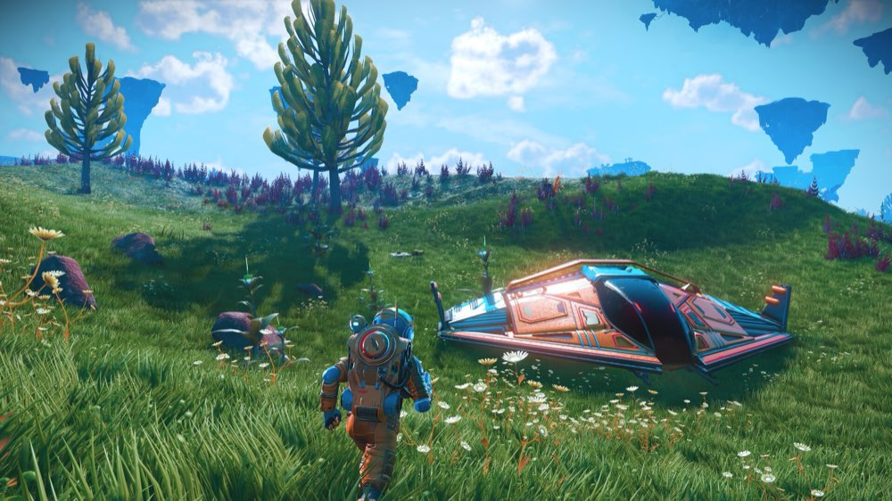

Hello Games

Hello Games is an independent studio in Guildford, England. Four developers founded it in 2008. At launch the team was about 15 people. It is still small, still independent, and still in Guildford.
The Founders
- Sean Murray: managing director and programmer
- Grant Duncan: art director
- Ryan Doyle: programmer
- David Ream: programmer
What They Are Doing Now
Still shipping free No Man's Sky updates. Their next game is Light No Fire, a fantasy survival game on one shared Earth-sized planet. It was announced in 2023 and still has no release date.